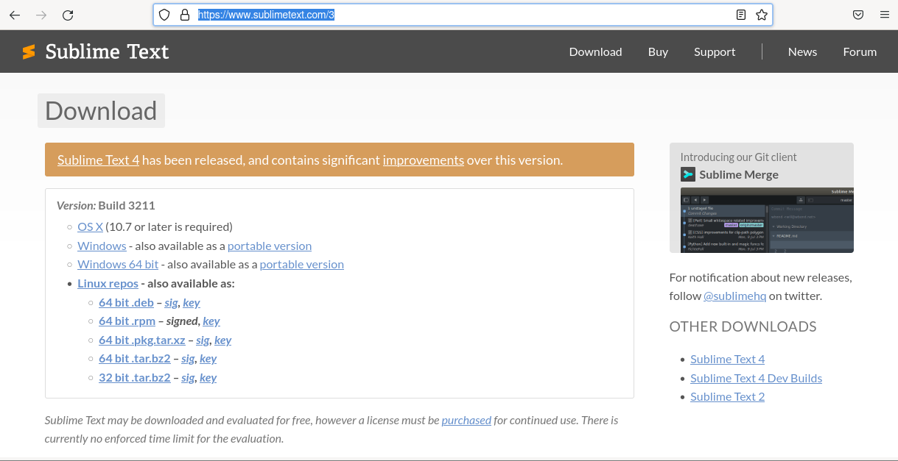

Como instalar sublime-text en tu distro archlinux?
En este bloc mostrare lo sencillo que es instalar este editor de codigo en tu distro
de archlinux.
Lo primero que vamos a hacer es ir a la pagina oficial de sublime-text, y elegimos la seccion donde dice linux repositorios.

Luego seleccionas la seccion PACMAN, te resumire los pasos y te dejare lo que tienes
copiar y pegar en tu terminal